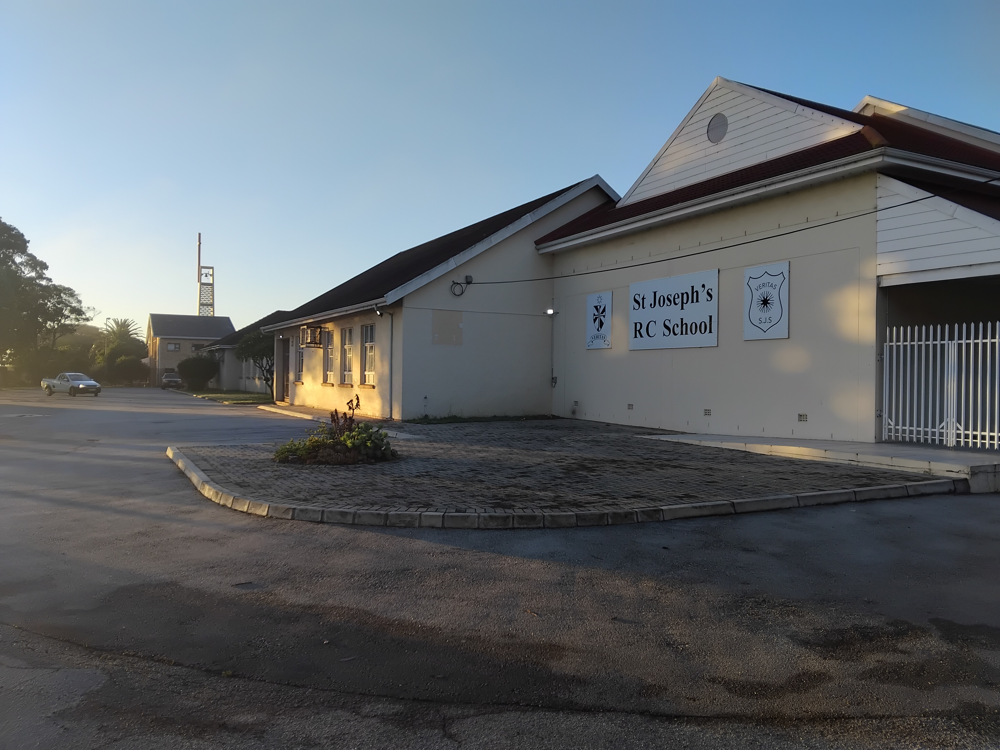
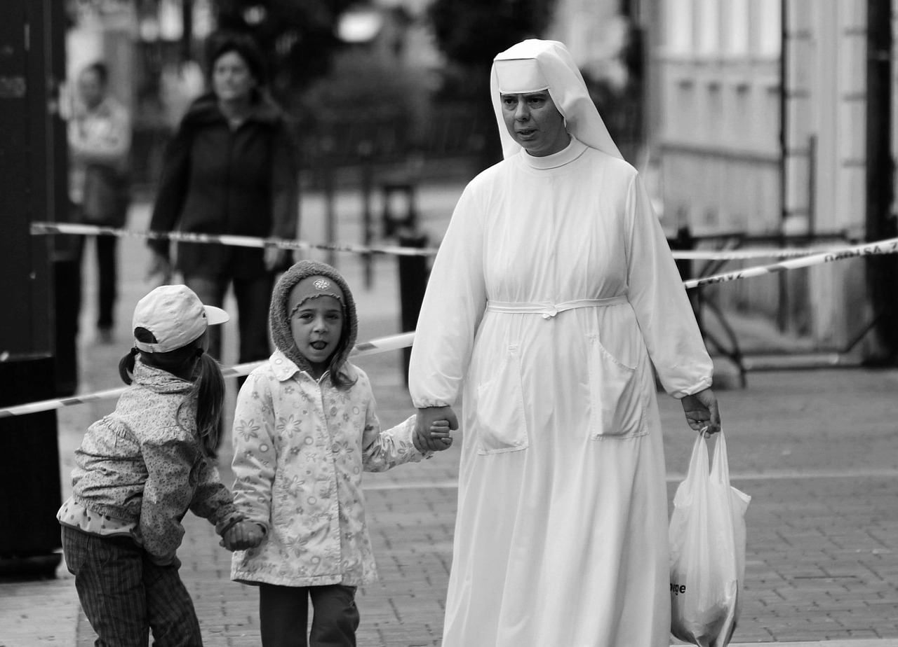
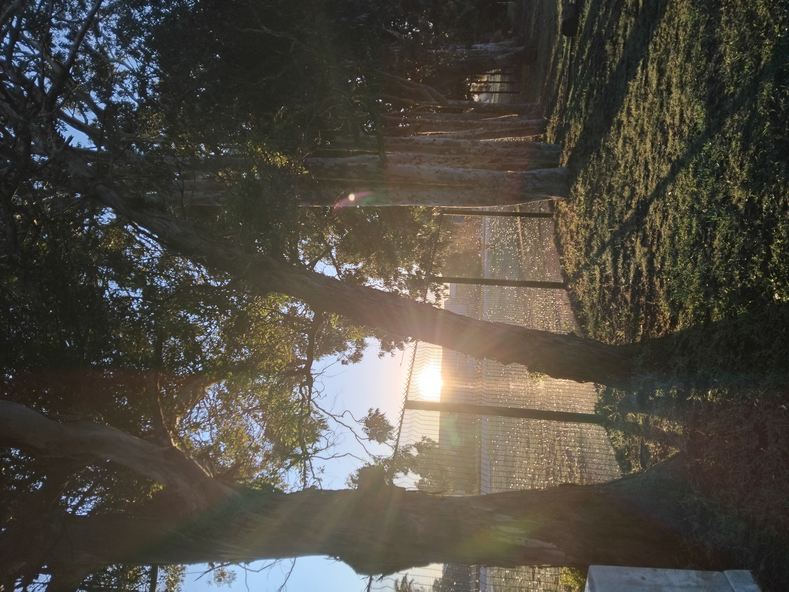
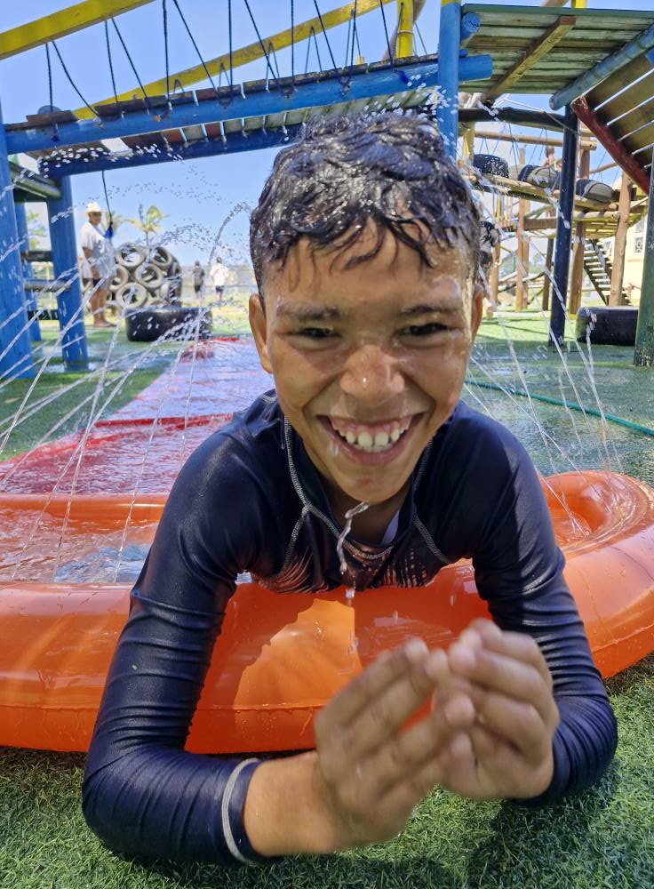

The story of St Joseph’s R.C. School begins with a vision—and a humble stone house. The land where our school now stands was purchased by the late Bishop John Murphy, then the parish priest of Mater Dei. At the time, a modest stone building occupied the plot, which was transformed into the very first Mass centre for the local Catholic community, led by Father Buckley, our first parish priest.
St Joseph’s Primary School opened its doors on 21 January 1959. Sister Pius, brought by car from Holy Rosary Convent, welcomed the first class of 14 learners. The Mass centre was used as a classroom. Men of the parish would move heavy pews after Mass to set up the school space for Monday mornings—a powerful symbol of commitment and community.


The school began to grow steadily. The upstairs room and kitchen were converted into learning areas. The level ground beside the building became the first playground, and the school hosted its very first Sports Day and church fête. Later, a tree-planting ceremony was held, commemorating the founders and families of the school — those trees still stand along the Cape Road boundary today.
Mrs. Holly Allen, née Hobson, began her teaching career at St Joseph’s in 1979. She became principal in 2008 after Mr Du Preez, and holds the record for longest service at the school, with over 44 years of dedicated work. Her leadership has brought significant development to the school — always guided by her deep love for the children.
From new halls and a conference centre to a computer lab, library, motorised gates, and dedicated parking — the school continues to grow. Yet, its heart remains the same: a place rooted in Christian values, where children are nurtured with care, wisdom, and love.
Today, St Joseph’s R.C. School continues to shine as a beacon of truth, learning, and love. Our badge features a star—symbolic of the light above St Dominic's head at birth, representing the great deeds to come. Founded by the Dominican sisters, we carry forward their spirit of service, dedication, and truth every single day.
